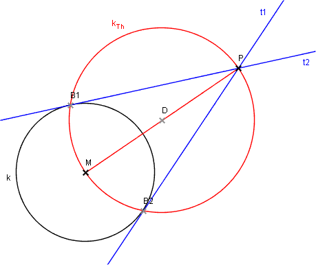

Tangenten vom Punkt P an die Kreislinie k

Konstruiere die Tangenten vom Punkt P an die Kreislinie k(M,r).
Bericht
- Kreislinie k(M,r), Punkt P
- Mittelpunkt D von MP
- Thaleskreis kTh über MP (Mittelpunkt D)
- kTh ∩ k = {B1, B2}
- Tangente t1 = (P B1), Tangente t2 = (P B2)